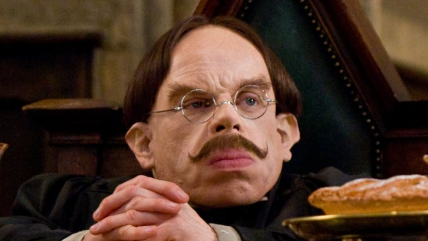
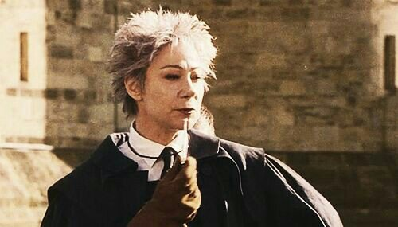

Albus Dumbledore
- Matéria: Transfiguração - 1956
- Outras matérias e notas: Diretor, 1956-1997

Minerva McGonagall
- Matéria: Transfiguração, 1956-1998
- Outras matérias e notas: Diretora Substituta, Diretora da Grifinória, Diretora de Hogwarts, 1998-antes de 2017

Fílius Flitwick
- Matéria: Feitiços
- Outras matérias e notas: Diretor da Corvinal; meio-duende.

Holanda Hooch
- Matéria: Instrutora de Voo
- Outras matérias e notas: Juíza das partidas de Quadribol de Hogwarts.

Severus Snape
- Matéria: Poções, 1980-1996; Defesa Contras as Artes das Trevas, 1996-1997; Diretor, 1997-1998.
- Outras matérias e notas: Diretor da Sonserina, desconhecido-1996. Disse para Dolores Umbridge que já ensinava em Hogwarts por dezesseis anos, logo após informar Voldemort da profecia. Assassinado por Voldemort durante a Batalha de Hogwarts.